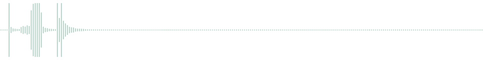

A shared embedding space is not a shared decision space
Keep the vector.
Change the decision.
What a frozen vector can support depends on how you read it. Hear the disagreement, switch the reader, then compress the same representation.
Start with a sound01 / RECOVERABILITY
One sound. Four different wrong answers.
Listen before revealing the label. The question is whether changing the reader can recover a label from the same stored vectors.

Show the label and reader predictions
Dataset label can opening
| Checkpoint | Selected text prompt | Nested logistic reader |
|---|
Every displayed prediction agrees across all three held-out split seeds. The encoders and their vectors are unchanged. This sound can be ambiguous to a listener; the benchmark label is the scoring reference.
02 / PORTABILITY
A shared space needs a pathway check.
Choose a target input. Then switch which modality trained the classifier. The target media and its frozen vector stay fixed.
The 16 sampled frames, shown at 5 fps. Silent and slower than the source clip; this is the frame sequence, not native-rate playback.
Original held-out event audio. The reader always sees this same audio vector.
Omni Mini 2.3B · logistic C = 1
Train the reader on…
03 / COMPRESSION
Would you keep the same reader at 32D?
A full-width recommendation can reverse after compression. Both readers use the same ObjectNet images and held-out folds; Ridge is refit at each width.
At full width, text prompts win.
Balanced accuracy (%) · Ridge α = 10
The reversal occurs in all three Jina seeds. Other checkpoints remain prompt-dominant; compression does not universally favor a trained reader.
Endpoint protocol ↗04 / COUNTEREXAMPLES MATTER
A better reader still makes different mistakes.
Two selected Jina examples from ObjectNet. The improvement on one image comes with a regression on another; all shown decisions agree across three seeds.
These are outcome-selected illustrations, not random samples or estimates of recovery rates. The audio clip was selected using consistent rescues on Gemma 2, Jina, and Omni Mini 0.9B; Omni Mini 2.3B is shown as additional context. AVE examples and the image regression are the first eligible items under their recorded prediction patterns. The cellphone rescue was visually selected from 156 consistent rescues to make the object and the wrong background-related label easy to see.
Full-manifest scores support the claims. These demonstrations show what an individual disagreement looks or sounds like. The page displays saved predictions; it does not run a model.
Example IDs, predictions, and selection rules ↗Media sources and attribution ↗TRY THE PROTOCOL
Make the reader part of the experiment.
Run the diagnostics on cached vectors, then jointly select model, width, and reader under the same storage and label budgets.